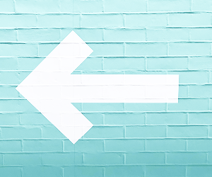
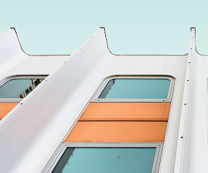

Manifest is a newborn theme.
Clean, simple and fast.
Blog
Technology, Interface Design
Using UX Design to Build a Sustainable Future

Technology, Interface Design
Using UX Design to Build a Sustainable Future
Latest Posts
View All-
Interface Design
UX traffic light colours
UI has to make a huge visual difference between warning, an alert and a success.
-
Technology
Using UX Design to Build a Sustainable Future
UI has to make a huge visual difference between warning, an alert and a success.
-
Visual Design
Creativity vs. UX
Is it possible to create a delightful user experience without following best UX practices?
The Most Popular
View All-
Interface Design
Mentorship Match — How a simple LinkedIn feature can boost diversity
LinkedIn is on a clear mission to make professionals more successful by connecting the global workforce and as we learned — diversity and success go hand in hand
-
Visual Design
Creativity vs. UX
Is it possible to create a delightful user experience without following best UX practices?
We work with clients around the world from our headquarters in Charleston, South Carolina.
We focus on naming, branding, brand narratives, website design and development, and brand experiences.